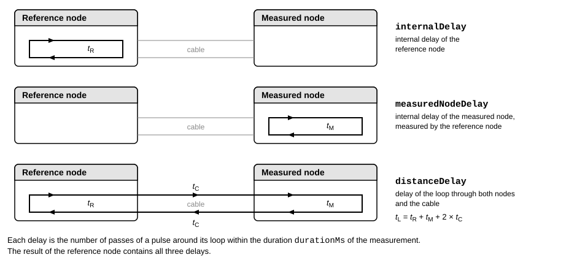

Topology Discovery
File: server/rcp_tpd.proto
Package: esb.rcp.tpd
Commands for the topology discovery of 10BASE-T1S networks.
On a 10BASE-T1S network all nodes share the same line. Topology discovery measures signal delays on that line, from
which a client can derive the layout of the network. The RCP server supports it if
rcp.info.fldCapabilities.topologyDiscoverySupported is set (see Identification and Capabilities). The details of the measurement
are PHY-dependent, refer to the datasheet.
The measurement involves two nodes, a reference node and a measured node. The client starts it on both nodes with
the command rcp.dev.opTopologyDiscovery, each with its own role. The nodes then measure together over the
line: first the internal delays of the nodes, then the delay between them. A node waits for the other node at most
for the timeout of its command. The measurement requires the line to be silent. The commands
rcp.dev.opEnterSilent and rcp.dev.opExitSilent switch an RCP server to and from the silent mode for this
purpose.
The server answers with the delays that it measured and the status of the measurement. The delays are counts, which the section Distance converts into the distance between the nodes.
Distance
The result of the reference node contains the three delays that the distance needs. Each one is a count: the number of passes of a pulse around its loop within the duration of the measurement. The figure shows the three loops:

The time of one pass around a loop is the duration divided by the count. With the duration
\(T\) = fldCmdResult.durationMs × \(10^6\) ns, the delays are \(t_R\) = \(T\) / fldCmdResult.internalDelay for the
reference node, \(t_M\) = \(T\) / fldCmdResult.measuredNodeDelay for the measured node, and
\(t_L\) = \(T\) / fldCmdResult.distanceDelay for the loop through both nodes.
The loop through both nodes passes the cable twice, once in each direction, so \(t_L\) = \(t_R\) + \(t_M\) + 2 × \(t_C\), where \(t_C\) is the delay of the cable in one direction. The delay of the cable and the distance \(d\) between the nodes follow from it:
\(t_C\) = (\(t_L\) - \(t_R\) - \(t_M\)) / 2
\(d\) = \(t_C\) / \(v\)
where \(v\) is the propagation delay of the cable in nanoseconds per meter.
Example
To measure for 10 ms, with a timeout of one second, as the measured node:
seq: 1
dir {
action {
rcp { op: opTopologyDiscovery topDisc { role: roleMeasuredNode durationMs: 10 timeoutMs: 1000 } }
}
}
To start the other node as the reference node, send it the same command with role: roleReferenceNode.
To derive the distance from the result of the reference node with internalDelay: 32906, distanceDelay: 15800,
durationMs: 16, and measuredNodeDelay: 34918, take the duration \(T\) = 16 × \(10^6\) ns. The delays are then
\(t_R\) = 486.23 ns, \(t_M\) = 458.22 ns, and \(t_L\) = 1012.66 ns, so the delay of the cable is
\(t_C\) = (1012.66 - 486.23 - 458.22) / 2 = 34.10 ns. With \(v\) = 5 ns/m, the distance is \(d\) = 34.10 / 5 = 6.82 m.